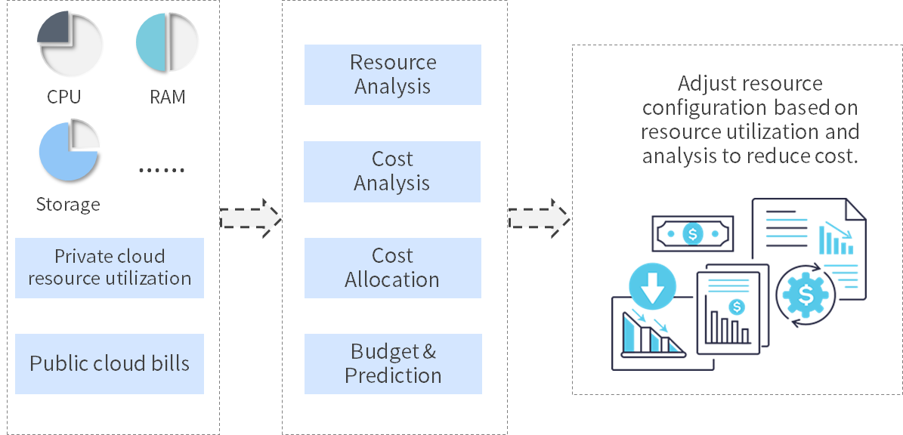

Billing & Usage
- Resource Usage Analysis: Discover and analyze the usage and utilization of a cloudy environment, making all resources traceable. Through custom costing, public cloud cost visibility, insight into the cost of a cloudy environment, and increased ROI. It can set billing rules for data center resources such as computing, storage, network, PaaS services, etc. according to different time dimensions; automatically divide accounts according to departments and projects; multi-dimensional display of cost usage and trends; welcome page overview resources; Rich out-of-the-box charts that show resource status in multiple dimensions; dashboards and reports can be customized as needed to configure different views for different roles.
- Cost optimization: Cost visualization, combined with resource usage, helps optimize workload deployment and rationalize configuration. Estimate the overall service price at the time of request, and compare the price of different cloud platforms; combine resource utilization rate and cost, propose optimization suggestions, and reduce excessive configuration.
- The custom billing model is supported to realize the metering and billing of the private cloud while the public cloud bill is synchronized according to the timing policy, and the cost analysis of the public cloud and the private cloud are unified in combination with the new cost analysis module.

1. Cost Analysis
1.1. Cost display
Click on the left navigation "Billing & Usage" - "Cost Analysis" to display the cost display: This page shows the cost ratio of each business group, the cost trend with time as the span, supporting filtering according to time, cloud platform, resource type, business group, project and owner.
1.2. TOP ranking
TOP ranking shows the use of TOP5 for cloud platform fees, TOP5 for resource type fees, TOP5 for business group expenses, TOP5 for project costs, TOP5 for service deployment costs, and TOP5 for owner fees. Filter by time, cloud platform, resource type, business group, project, and owner to view.
2. Cost Optimization
The list of cost optimization features shows the use of cloud resources, as well as the cost, to help you identify resources with lower usage rates and to make configuration adjustments directly.
The usage score is a combination of the average usage of CPU, memory, and disk. Find the distribution of idle resources according to the ranking of usage scores (the smaller the usage score, the more idle resources), and the configuration can be re-configured with one click, so that the resources used inefficiently can be adjusted in time to save costs.
Click on the left navigation "Billing & Usage" - "Cost Optimization" to show the usage of all virtual machines: This page displays the name, status, usage score, CPU usage, memory usage, disk usage of each instance, cost (reference value), configuration (CPU/memory/disk), business group, project, owner.
For detailed usage parameters, please refer to the following table:
- Business group Business group
- Name Name (If the business group has set a naming rule, the name will be automatically generated according to the rules, no need to fill in)
- Project Project
- Owner Owner of the deployment
- Status Enabled, Stopped, Lost
- CPU usage Average CPU usage for a period of time (last week, last month, last three months, first half year)
- Memory usage Average usage of memory over the past period (last week, last month, last three months, first half year)
- Disk usage Average usage of disks in the past period (last week, last month, last three months, first half year)
- Usage Score The average usage of disk and memory usage and CPU usage over the past period of time, the average of the three (last week, last month, last three months, first half year). The smaller the score, the lower the usage rate and the more idle resources
- Cost Cost of deploying virtual machines for the next month is estimated based on the cost of deploying resources last month (values harmonize the cost of public and private clouds)
The platform considers the usage rate of computing, network and storage. Based on data monitoring, it calculates the average of disk usage, memory usage and CPU usage in the past week, month, three months or half year. Give the sum of the usage scores. According to all the data shown above, find out the idle resources, sort and analyze the virtual machine with higher cost, and use the virtual machine with lower usage rate to perform one-click reconfiguration, optimize resource allocation, and improve resource utilization.
How to reconfigure resources: Click on the left navigation "Billing & Usage" - "Cost Optimization", select an instance, enter the instance details page, display instance basic information, operation history, snapshot information, monitoring, triggered alerts, timing tasks, etc. The details page can reconfigure resources by doing the following:： Restart, suspend, stop, remote terminal, adjust virtual machine configuration, add new disk, expand disk, add network card, delete network card, create snapshot, restore to snapshot,vMotion migration, etc.
Usage
- Restart Restart the (off state) virtual machine You can also trigger the task by setting the "timing" (at some point in the future).
- Suspend A suspended (powered on) virtual machine can be triggered by setting "timing" (at some point in the future)
- Stop Stop (i.e. shut down) the virtual machine (on the power-on state). You can trigger this task by setting the “timing” (at some point in the future).
- Remote Terminal Enter the remote terminal page. Enter the command to execute and click OK
- Adjust VM Configuration Adjust the configuration of virtual machine or container node (vCPU, memory)
- Add a New Disk Add a new disk to the virtual machine. You can trigger this task by setting the "timing" (at some point in the future).
- Expanding a disk Extend an existing disk to a virtual machine. You can trigger this task by setting the "timing" (at some point in the future).
- Add a NIC Add a new NIC, take effect for all instances of the compute node, select the network label and IP assignment
- Delete a network card Delete a network card affects all instances on the node.
- Create a Snapshot Create a snapshot of the virtual machine, which can be triggered by timing (at some point in the future).
- Revert to Snapshot To restore a virtual machine to a previous snapshot, you can trigger this task by setting "Timing" (at some point in the future).
- vMotion Migration Compute resource migration and storage migration
「Note」If you need to see more details about VM operation, please refer to: VM Operations
3. Billing Rules
SmartCMP allows custom billing rules to charge a variety of different types of resources on managed cloud platforms and synchronize public cloud bills (see the "Billing Synchronization" section) to unify the cost management and analysis of public and private clouds.
The platform supports multiple billing modes, including standard mode, professional mode, and public cloud billing.
- Standard mode means that the current billing specifications are billed for a single resource. You can select the cloud platform and resource bundle, specify the component type, and select specific components to set the price. For example: Set prices for all resource bundles under the Tencent cloud platform and IaaS component category instances.
- Professional mode, define a set of billing rules through scripts, for example: Alibaba Cloud has a variety of specifications, and the prices of different specifications are inconsistent. Use a script that supports JavaScript to define a set of Alibaba Cloud different specifications' billing price.
- Public cloud billing model, for public cloud resale business scenarios, tenant administrators can set different discount factors, currency conversion, and bill synchronization for different resources.
Billing rules support multiple currency units, including RMB, USD, Saudi Riyal, etc. Tenant administrators can select a currency unit in the system configuration, (default RMB) can choose Saudi Riyal or US dollar. After that, the billing rules and the currency unit when the fund account is recharged are kept consistent with the configuration.
The following describes the steps for adding, editing, and deleting billing rules: Click "Billing & Usage"-"Billing Rules" in the left menu bar, you will see a list of the created billing rules which lists the information of the resource types and prices that have been created. System administrators and tenant administrators can edit and delete the created billing specifications and add new billing specifications. Billing rules will display the cloud platform, resource category, storage category, pricing unit, price, currency unit, period, etc.
Add billing rules: Go to the menu "Billing & Usage" - "Billing Rules", click "Add", select cloud platform management, resource bundle resource category (CPU, memory, storage component, floating IP, Load balancer, load balancer), pricing unit, price, currency unit (RMB), period (hour, day, week, month), click "Submit". Add the calculation of resource price successfully and the billing management list shows just added Information.
Edit billing rules: Select an item in the list, click "Edit", modify the information and click "Submit"
Delete the billing rule: Select an item in the list, click “Delete”, a confirmation prompt pops up, click “Yes”
4. Billing synchronization
Supports timing synchronization of public cloud billing data. Click on the left menu bar "Billing & Usage" - "Billing Synchronization", you will see the billing synchronization list, display name, cloud platform, status (disabled / enabled), recent execution record, latest execution time, and so on. Add, edit, delete, enable, and disable operations.
Add synchronization policy: Click “Add”, enter the synchronization policy name, select a cloud platform to be synchronized, select the status (enable/disable), fill in the execution time (Cron expression), and click “Save”.
Edit the synchronization policy: Select a synchronization policy in the list, click “Edit” to enter the editing interface, you can change the name, cloud platform, object storage, status, execution time, etc. The synchronization history information is displayed at the bottom of the page.
Enable/disable synchronization policy: Select an enabled/disabled synchronization policy in the list interface, the above disable/enable operation will be available